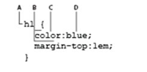
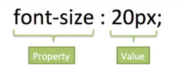

En esta lección vamos a conocer los elementos básicos de dos lenguajes: HTML y CSS. Aunque tienen distinta sintaxis y reglas, dependen fuertemente uno del otro. Al finalizar esta lección podrás saber cómo crear paginas sencillas HTML, añadir imágenes, crear enlaces de una página a otra y modificar su aspecto en pantalla utilizando CSS.
Los documentos HTML (iniciales de Hypertext Markup Language) utilizan la extensión .htm o .html. Esta extensión avisa al navegador web o a un dispositivo como un teléfono móvil, que en este archivo hay contenido HTML y dicho contenido se restituye en la ventana del navegador o la pantalla del dispositivo siguiendo las reglas del lenguaje HTML.
Las etiquetas se utilizan para definir el contenido de una página HTML. Estas etiquetas quedan enmarcadas dentro de los símbolos "menor que" (<) y "mayor que" (>) y se ponen al principio y al final de un objeto o texto utilizado en la página HTML.
HTML y XHTML están estrechamente relacionados. Existe una lista de reglas definidas por el World Wide Web Consortium (organismo de normalización que también se conoce como W3C) que especifican los límites de HTML y XHTML.
Hay una diferencia esencial entre HTML 4.0 y XHTML 1.0 los dos estándares más recientes publicados por el W3C (World Wide Web Consortium). Tal y como está definido el XHTML, las páginas escritas en XHTML se pueden ver también en los navegadores que muestran las páginas HTML actuales. Las etiquetas y atributos de XHTML y HTML siguen siendo las mismas, pero la sintaxis del código XHTML es más estricta.
Al inicio de toda página web debe aparecer una declaración Doctype. La declaración de "tipo de documento" le aporta pistas al navegador sobre el tipo de información que se va a encontrar en la página. Puesto que las especificaciones de HTML y XHTML son distintas, el navegador sabe así qué lenguaje va a interpretar y representar. El navegador restituye la página empezando por la primera línea y va avanzando de principio a fin, por lo que esta indicación en la primera línea de todas tiene pleno sentido. Aunque no es obligatoria, es una buena práctica empezar siempre utilizando doctype al principio de nuestras páginas.
W3C es la abreviatura con la que se conoce al World Wide Web Consortium una organización sin ánimo de lucro cuyo objetivo consiste en orientar la evolución de la Web. El W3C ofrece directrices y reglas para especificaciones como HTML y XHTML. Una forma de definir la validez del código HTML o XHTML que generamos es utilizar el servicio online de validación del W3C, que es gratuito.
La validación de páginas del W3C es el aspecto más tangible de un diseño web conforme a estándares, pero hay también otras ventajas importantes al crear páginas bien estructuradas:
Uno de los conceptos más importantes que debemos dominar a la hora de diseñar contenidos web es la estructura anidada de los documentos HTML. Los elementos suelen presentarse contenidos unos dentro de otros. Por lo general tenemos que empezar por diseñar la estructura HTML de la página para después continuar con los estilos, aplicando CSS. En este ejemplo podemos ver los elementos más básicos que nos vamos a encontrar en prácticamente toda página web:
<.html>
<.body>
<./body>
<./html>
El elemento <.body> está anidado (incluido) dentro del elemento <.html>. En términos de programación, <.body> está colocado entre la etiqueta de apertura <.html> y la de cierre <. /html>, y por eso decimos que las etiquetas anidadas son las que se encuentran entre otras etiquetas de apertura y cierre. Ambos elementos, <.body> y <.html>, forman la estructura básica de toda página web. Cuando un navegador abre un documento HTML busca esta estructura.
Para colocar imágenes dentro de un documento HTML se utiliza la etiqueta <.img>. Al igual que ocurre con la etiqueta <.a>, la etiqueta de imagen por sí sola no hace nada. Depende del valor de los atributos que especifiquemos, que indican qué imagen se debe mostrar y cómo ha de hacerse.
Muchos de los atributos opcionales se encuadran dentro de lo que se denomina "buenas prácticas". Las buenas prácticas son un concepto amplio, que se utiliza para describir la manera generalmente aceptada de hacer las cosas en el diseño y programación para la Web. Hay, en general, razones de sentido común detrás de las buenas prácticas: por ejemplo, al indicar la altura y la anchura se crea un espacio (conocido como "placeholder") para la imagen, y permanece aún en el caso de que la imagen no se haya descargado, debido a la lentitud de la conexión.
CSS (Cascading Style Sheets) utiliza un lenguaje distinto de HTML. CSS nos permite aplicar estilos de manera coherente a los distintos elementos de las páginas del sitio web, de modo que los títulos, listas y párrafos pueden verse igual en todas y cada una de las páginas.
El color, tanto en HTML como CSS, se designa mediante un código de seis caracteres precedido por el signo de almohadilla. A esta notación se le llama código hexadecimal, y es el sistema que se utiliza para identificar y establecer el color de los elementos. Con esta notación podemos reproducir prácticamente cualquier color. Por ejemplo, el color rojo oscuro se representa como #CC0000.
El código se divide en tres pares de dígitos, y cada uno de ellos representa el valor RGB del espectro. Por ejemplo, el color blanco se representa en notación RBG como R:255 G:255 B:255, y su equivalente en HTML en formato hexadecimal es #FFFFFF
Podemos modificar el valor de la propiedad font-size de varias formas:
Tamaño absoluto: se trata de una serie de palabras clave que indican tamaños predefinidos de letra, Los valores posibles xx-small, x-small, small, medium, large, x-large y xx-large.
Longitud: Es un número seguido de un indicador del sistema de medida (cm, mm, in, pt, o pc) o bien un de unidades relativas (em, ex, o px).
Porcentaje: Un entero seguido del signo de porcentaje (%).
Tamaño relativo: Los valores posibles son larger y smaller.
El texto en monitores pequeños a menudo tiene un aspecto distinto de como aparecen en monitores de gran formato; con un poco de previsión podemos resolver este problema, imaginando el efecto en cada caso.
XML es un lenguaje de marcado similar a HTML. Significa Extensible Markup Language (Lenguaje de Marcado Extensible) y es una especificación de W3C como lenguaje de marcado de propósito general. Esto significa que, a diferencia de otros lenguajes de marcado, XML no está predefinido, por lo que debes definir tus propias etiquetas. El propósito principal del lenguaje XML es generalmente para propósitos descriptivos, compartir datos a través de diferentes sistemas, como Internet.
XHTML significa lenguaje de marcado de hipertexto extendido. Es una reformulación del lenguaje HTML que ahora pasa a ser compatible con el estándar XML, considerándose que se incluye en la familia de los Lenguajes de Marcado. Se utiliza para generar documentos y contenidos de hipertexto generalmente publicados en la Web.
Nestor Emiliano Martinez Marin 1798117 ITS
La flexibilidad de HTML puede parecer un aspecto positivo, pero el resultado final son páginas con un código HTML desordenado, difícil de mantener y muy poco profesional. Afortunadamente, XHTML soluciona estos problemas añadiendo ciertas normas en la forma de escribir las etiquetas y atributos.
Axel Alexis Chávez Monsiváis 1907168 IAS
Durante la practica logre entender mejor las distintas opciones que da CSS y HTML, además de entender el XHTML el cual es parecido al HTML siendo que estos dos funcionan bien, la mayoría de las cosas que se mostraron ya sabía sobre ellas, pero también hay varias cosas que pude saber cómo se hacían exactamente debido a esta práctica, había otras cosas que tenia conocimiento, pero no sabia casi nada como el XTHML y el XML.
José Ernesto Rodríguez Alfaro 2035732 ITS
Gracias a la práctica logre entender mejor las diferencias entre XML y HTML, las reglas que estos conllevan como en sintaxis y ordenamiento, también adquirir conocimientos sobre XHTML, ya que nunca había investigado del tema, y de su funcionamiento ala hora de desarrollar en web, también más conocimiento en HTML y css como de las opciones que estos ofrecen y las ventajas al usarlos de manera conjunta.
José Francisco Guerrero Mata 1819702 IAS
El uso de CSS es muy importante para darle diseño de color y tamaño a nuestra página web por completo, existen muchas etiquetas para poder modificar el color de las letras, el tamaño del texto, pero también debemos de tener en cuenta al realizar estas modificaciones que no todos los usuarios que entren a la página la puedan ver como se realizó en un principio, esto debido a que cada usuario cuenta con su propia configuración de letras predeterminadas, asimismo aprendí más de como modificar y diseñar dentro de una página web para poder llevarlo a mi proyecto final.
Ángel Gabriel Martinez Belmares 1904590 ITS
Después de haber desarrollado la practica puedo concluir que XML es un lenguaje muy parecido a HTML, pero con ciertas ventajas y desventajas, ya que este fue diseñado para cumplir con un propósito parecido, más no igual y que dependerá de lo que estemos buscando hacer, deberemos elegir uno u otro como más nos sea conveniente.